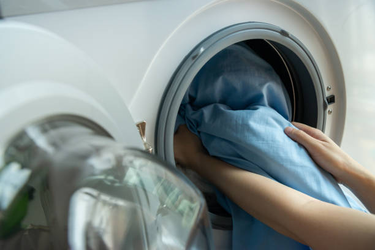
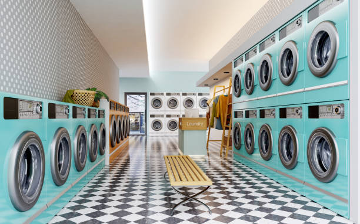

ABOUT US
The PioClean Laundry Service was incorporated on the 19th of July 2022
with the mission
of providing customer with high
value, exceptional service and convenience for all garmemt
care needs,
carpets and upholstery, training,
consulting for dry cleaning
comanies, corporate bodies, hotels, events manger etc.
The PioClean Laundry
Service is located in a strategic location around Lagos State.
MISSION STATEMENT
We strive to be the acknowledged Nigeria Leader in Dry Cleaning
and preferred
partner by setting the highest standards in service reliability
and cost containment.
CONTACT INFO
Address: 15 Abeokuta Street, Ogba. Lagos
Phone: +2348130969333
Email: PioCleanlaundry.com, PioCleanlaundry@gmail.com
OPENING HOURS
Mon - fri: 8:00am - 6:00pm
>
Copyright ©2022 The PioClean Laundary Service. All Right Reserved.
Code Of Acceptance Practice Privacy Policy
Contact Us